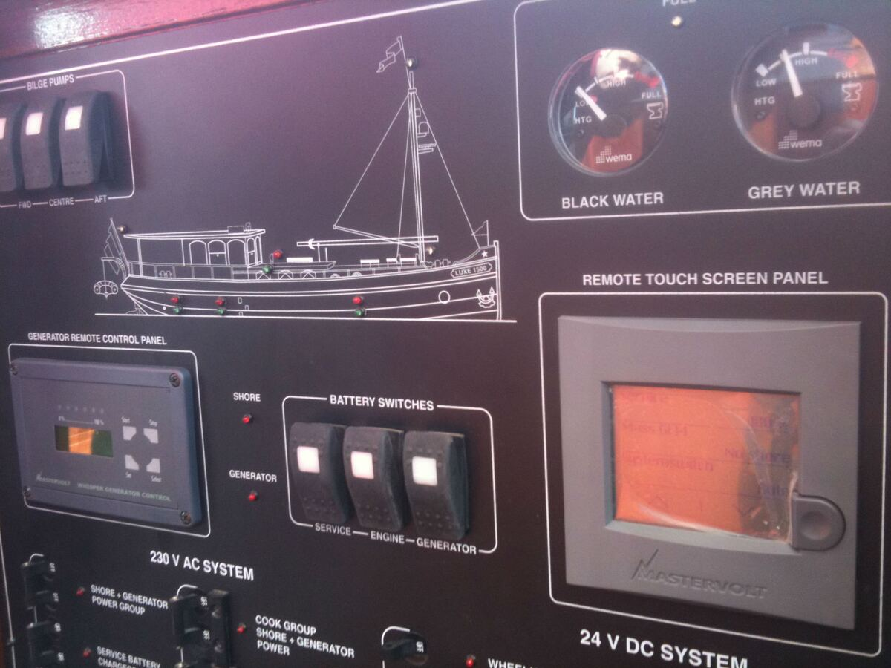
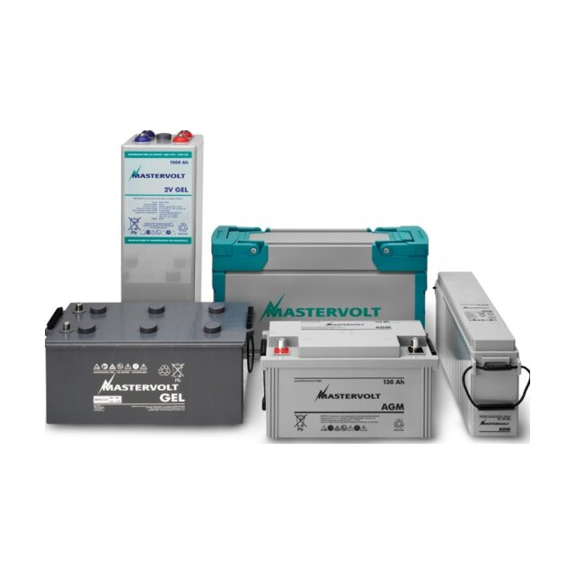
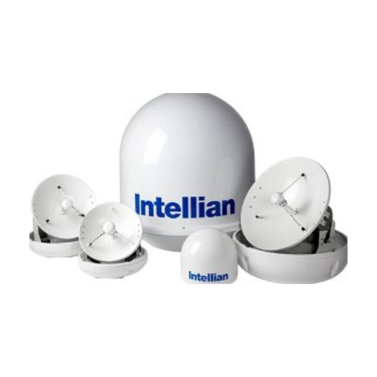
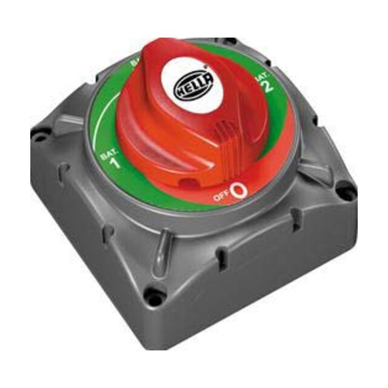
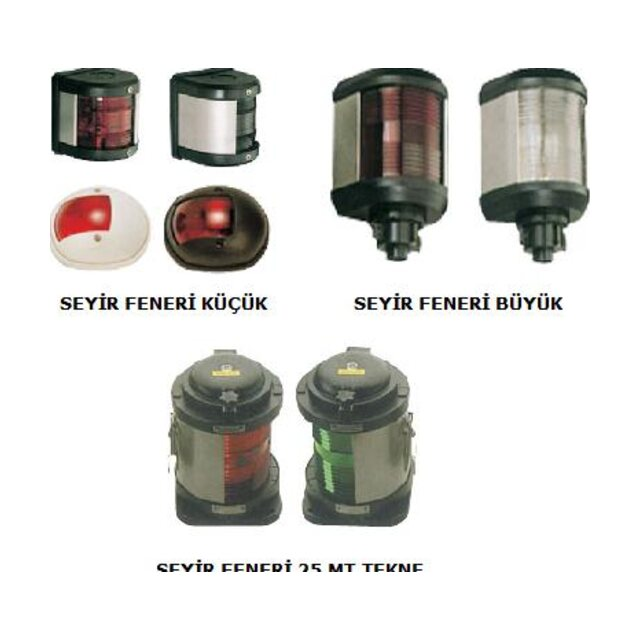

Hizmetlerimiz
Teknenin elektrik sistemi, baştan sona
Projelendirme, pano imalatı, kablolama, ışıklı yazılar, ürün temini ve servis: hepsi aynı ekipten.

Elektrik projelendirme
Her teknenin elektrik ihtiyacı farklıdır: sahil elektriği ve jeneratör girişleri, akü grupları, 12/24V DC ve 230V AC tüketiciler, seyir ve haberleşme cihazları. Projelendirme aşamasında bütün bu sistemleri tek bir plan üzerinde bir araya getiriyoruz.
Hazırladığımız tek hat şemaları ve pano yerleşim çizimleri, imalat ve montajın yol haritası olur; teslimden sonra da bakım ve arıza tespitinde teknenin elektrik kimliği olarak kalır.
Kapsam
- Tek hat şemaları ve dağıtım planları
- AC ve DC pano ön yüz tasarımları
- Akü grupları, şarj ve invertör kurgusu
- Kablo güzergâhı ve bağlantı planları
Kumanda panelleri
Kaptan köşkü, teknenin bütün sistemlerinin yönetildiği yerdir. Seyir ekranlarını, motor göstergelerini, kumanda anahtarlarını ve haberleşme cihazlarını konsola, kullanımı kolay ve düzenli bir yerleşimle yerleştiriyoruz.
Paneller teknenin iç tasarımıyla uyumlu malzemelerde imal edilir; aydınlatma, sintine ve güverte ekipmanlarının kumandaları etiketli anahtar gruplarında toplanır.
Kapsam
- Konsol ve dümen paneli yerleşimleri
- Seyir ekranı ve plotter entegrasyonu
- Motor göstergeleri ve alarm grupları
- Aydınlatma, sintine ve güverte kumandaları
Sigorta ve alarm panoları
Teknenin elektrik dağıtımı bu panolardan yönetilir. 12V/24V DC ve 230V AC devreleri, her biri etiketli sigorta ve anahtarlarla gruplanmış, ön yüzüne teknenin silüeti işlenmiş panolar halinde tasarlayıp üretiyoruz.
Akü ve jeneratör gerilimleri, tank seviyeleri ve sistem uyarıları aynı pano üzerinden izlenir; kaptan, tek bakışta teknenin elektrik durumunu görür.
Kapsam
- AC ve DC dağıtım panoları
- Akü ve jeneratör gerilim/akım göstergeleri
- Sahil elektriği, jeneratör ve akü seçim anahtarları
- Pis su, gri su tank seviyesi ve alarm göstergeleri
Kablolama ve altyapı
Görünmeyen ama en kritik kısım altyapıdır. Kablo kanallarını, bağlantı kutularını, sigorta ve akü bağlantılarını düzenli, etiketli ve bakımı kolay olacak şekilde kuruyoruz.
İyi kurulmuş bir altyapı, yıllar sonra yapılacak bir arıza tespitini dakikalara indirir; yeni bir cihaz eklemek de sistemin geri kalanını bozmadan mümkün olur.
Kapsam
- Kablo kanalı ve güzergâh montajı
- Bağlantı kutuları ve klemens düzenleri
- Akü bağlantıları ve ana sigortalar
- Güç dağıtım modüllerinin montajı
Işıklı tekne yazıları
Teknenin adı, kimliğidir. LED arka aydınlatmalı ya da paslanmaz harf isim yazılarını teknenin formuna ve rengine uygun olarak hazırlıyoruz.
Aydınlatmalı yazılar teknenin elektrik sistemine bağlanır ve kumanda panelinden kontrol edilir; beyaz, mavi ya da kırmızı ışıkla gece de görünür.
Kapsam
- LED arka aydınlatmalı isim yazıları
- Paslanmaz çelik harfler
- Beyaz, mavi ve kırmızı ışık seçenekleri
- Elektrik sistemine bağlantı ve kumanda
Ürün satışı, bakım ve servis
Dünyaca ünlü markaların satış ve servis hizmetlerini veriyoruz. Teknenin ihtiyacına uygun ürünü seçmekten montajına, devreye almadan bakım ve onarıma kadar aynı ekip yanınızda.
Mevcut bir teknenin elektrik sistemine yeni cihaz eklemek, eskiyen bileşenleri yenilemek ya da arızayı tespit etmek için de bize ulaşabilirsiniz.
Kapsam
- Ürün seçimi ve temini
- Montaj ve devreye alma
- Bakım ve arıza onarımı
- Mevcut sistemlerde yenileme ve ekleme




Teknenizin elektrik sistemi için bize ulaşın
Yeni bir proje, bir yenileme ya da bir arıza: ilk görüşmeyi telefonda yapalım.